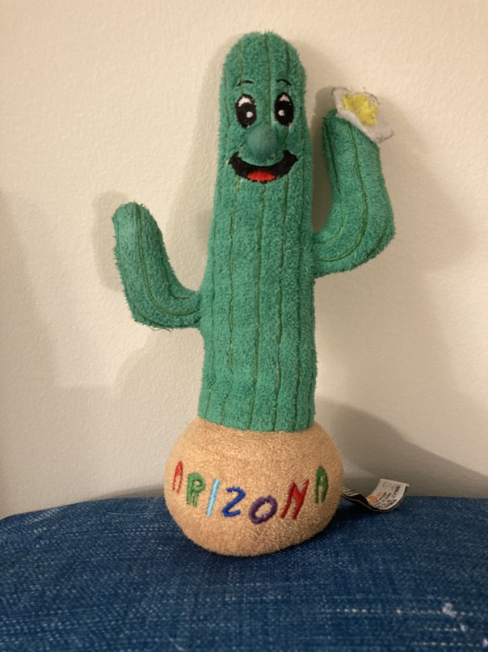

Words that describe her: busy, messy, drinks too much coffee, hardworking, fast driver
Businesses: Droplet Computer, Inc. (CEO, Co-founder, Chief of Software Development, Chief of Product Design, and Chief of Product Marketing), airport hub and airline, Versailles, Louvre, Musee d'Orsay
Good at: computer programming, computers, computer repair
Not so good at: cooking, drawing
Favorite freetime activities: Chocolate Crinkle is too busy to have free time but enjoys tinkering and inventing things
Favorite foods: coffees, cookies, many other things
Inventions: Droplet Phone
Best friends: Emerald, Kermit, Leica, Shorty, Wilbur, Dusty, Strawberry
Comes from: Snappy comes from Maine, UV Ray comes from Hawai'i
Words that describe them: best friends, curious, troublesome, gets in lots of arguments with each other
Businesses: Cabbage!!!!!! Restaurant (make key lime pies with Boing)
Good at: drums and steel drums (Snappy), singing and percussion (UV Ray)
Not so good at: staying out of trouble, sharing
Favorite freetime activities: Xbox, video games in general, jamming in JellyMan's Sugar Rush band (Snappy plays drum kit and steel drums, UV Ray sings and does general percussion)
Favorite foods: junk food
Best friends: each other, JellyMan
Siblings/family: Brick (Snappy's uncle)
Computers/technology owned: iBook G4, the other things that they borrow
Boing
NASA Space Shuttle
Comes from: Florida
Words that describe him: bouncy, smart, hardworking, obedient
Businesses: Cabbage!!!!!! Restaurant (makes key lime pies with Snappy and UV Ray)
Good at: flying, reading, synthesizer
Favorite freetime activities: reading books with Brick, learning new things, playing synth with the Sugar Rush band
Favorite foods: rocket fuel
Best friends: Snappy, UV Ray, Brick, JellyMan
Brick
Lobster
Comes from: Massachusets
Words that describe him: thoughtful, knowledgeable, kind
Businesses: library in Chocolate Crinkle's house
Good at: reading, climate science, being a librarian, watching over Snappy, UV Ray, and Boing
Favorite freetime activities: Xbox, iPhone, jamming with Paco and my band
Best friends: Boing, UV Ray
Siblings/family: Snappy (nephew)
Cars owned: 2008 Toyota Camry, 2021 Toyota Sienna
Leica
Reindeer
Comes from: North Pole
Words that describe her: feisty, clever, fast, competitive, loves gaming
Businesses: Droplet Computer Inc. (Chief of Computer Hardware and Internals), Innovate @ Droplet (Chief of Computer Hardware Development)
Good at: gaming, computers
Not so good at: keeping cool in frustrating situations
Favorite freetime activities: Xbox (Forza) with Shorty and Wilbur
Favorite foods: fruits and vegetables
Best friends: Shorty, Wilbur, Kebab
Computers/technology I own: Xbox One S, Droplet stuff
Kebab
Narwhal
Comes from: Arctic Ocean
Words that describe him: laid back, kind, cheerful, hopeful
Businesses: Moby's Fitness Club (assistant counter)
Good at: counting, violin, conducting
Favorite freetime activities: counting with Moby, learning violin and conducting with Emerald
Favorite foods: vegan shrimp
Best friends: Leica, Moby, Emerald
Wilbur
Pig
Words that describe him: competitive, gamer, shy
Businesses: Droplet Computer Inc. (Chief of Computer Performance), Innovate @ Droplet (Chief of VR and Simulation)
Good at: gaming, creating virtual reality worlds
Favorite freetime activities: Xbox (Forza Horizon 4 with Shorty and Leica)
Best friends: Shorty, Leica
Computers/technology owned: Droplet stuff, Xbox One S
Kermit
Frog
Words that describe him: very smart, hardworking, math genius
Businesses: Droplet Computer Inc. (Chief of Server Management and Cloud Computing), Innovate @ Droplet (Chief of Quantum Computing)
Good at: math, working with computers
I'm not so good at: being on time, time managment, being careful with things
Favorite freetime activities: math, listening to classical music
Best friends: Chocolate Crinkle
Computers/technology owned: Droplet computer, manages lots of servers for Droplet
Dusty
Snowy Owl
Words that describe him: cute, enthusiastic about his job, thinks he is very smart
Businesses: Droplet Computer Inc. (Chief of Computer Security)
Good at: sitting on the 1984 Macintosh, named Max, saying "Dusty!"
Not so good at: handling new and unexpected situations such as the 1984 Mscintosh was moved
Favorite freetime activities: nothing but his job of sitting on his 1984 Macintosh
Best friends: Chocolate Crinkle
Computers/technology owned: sits on a 1984 Macintosh every day
Bubbles
Clownfish
Comes from: Pacific Ocean
Words that describe him: thinks he is a piranha named Toothy, feisty
Businesses: Moby's Fitness Club (swimming coach)
Good at: swimming, being a piranha
Best friends: Moby
Comet (left) and Flopsy (right)
Portugese Water Dog and Old English Sheepdog
Words that describe them: curious, friendly, clever, somewhat troublesome
Good at: making Rube Goldberg machines to get treats from hard-to-reach places, pulling over JellyMan at walks
Favorite freetime activities: walks with JellyMan, fetch
Favorite foods: anything edible or not edible
Best friends: each other, JellyMan, everyone they see or meet
Strawberry
Cupcake
Words that describe him: short-tempered, observant, helpful, doesn't like to be called "cute"
Businesses: Cabbage!!!!!! Restaurant (chief waiter), Droplet Computer Inc. (Chief Secretary of the CEO)
Good at: keeping track of due dates, keeping everyone on task and on time
Not so good at: keeping calm in an upsetting situation
Favorite freetime activities: checking to see if Chocolate Crinkle is late for a meeting
Best friends: Chocolate Crinkle, Niccolo
Computers/technology owned: 3 Samsung Curved Super Ultra-Wide 49" monitors (to keep track of Chocolate Crinkle's schedule, location, etc. and a Droplet Phone to call her when she is behind
Niccolo
Pear
Words that describe him: patient, kind, thoughtful, shy
Words that describe him: hardworking, thorough, enthusiastic
Businesses: Droplet Computer Inc. (Chief of Software Development and Security for Droplet Phone, Droplet Phone OS, Droplet Computers, Droplet Computer OS, and Web Services As Well As Helping Kermit with the Servers)
Good at: computers (especially finding and researching bugs and viruses in them)
Favorite freetime activities: tinkering with computers, especially Raspberry Pi
Best friends: Chocolate Crinkle, Dusty
Arizona

Cactus
Words that describe him: optimistic, loves to travel
Good at: traveling
Favorite freetime activities: getting Domino's Pizza during trips, staying in fun hotel rooms, taking airplane flights
Favorite foods: pizza, water
Splash
Green Sea Turtle
Comes from: Hawai'i
Words that describe him: shy, happy
Favorite freetime activities: hanging out with Chocolat
Siblings/family: Chocolat Mustache (uncle)
Abby Cadabby
Fairy
Comes from: Sesame Street
Words that describe her: kind, cheerful, a little shy, enthusiastic